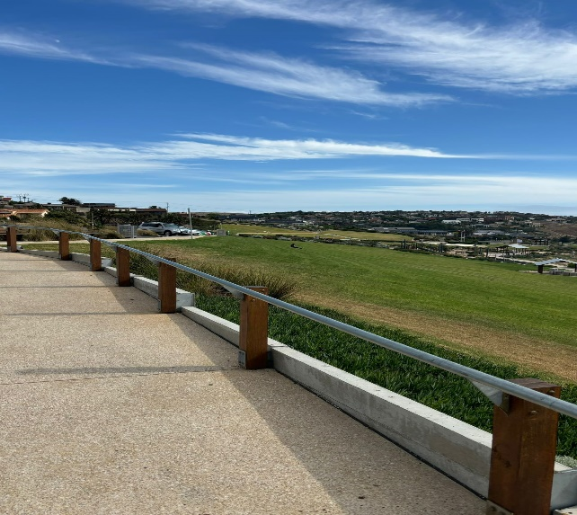
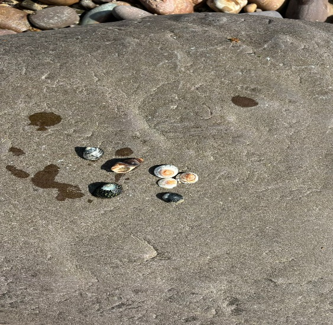

This project explores the fascinating geological history of Hallett Cove Beach and its cultural significance. Through a carefully curated video and accompanying content, we take you on a journey through time, highlighting the stunning natural landscapes, historical insights, and the ecological importance of this unique location. Whether you are interested in the area's ancient rock formations or its place in modern environmental conservation, this project offers a rich exploration of one of South Australia's most treasured sites
Watch nowCreating my video and website was a journey that began with research and exploration. I knew I wanted to highlight the historical and geological significance of Hallett Cove Beach, so I started by gathering visual references, geological data, and historical facts to form the foundation of the project. For the video, I focused on a documentary-style approach, using cinematic visuals to bring the story to life. I selected music that complemented the meditative tone and carefully timed each transition to match the pacing of the narrative. The website design followed a similar approach, ensuring the layout was clean and intuitive, allowing users to easily engage with the content. I focused on integrating the color palette and visual elements from the video to ensure a cohesive aesthetic across both platforms.
Throughout this project, I have deepened my understanding of digital media, particularly in crafting a compelling narrative that combines historical and geological insights with a reflective, respectful approach to the landscape. The research process sharpened my skills in sourcing credible information and integrating it into a creative framework, while also enhancing my technical abilities in website design and video production.
In designing the website, I learned how to effectively present multimedia elements—images, video, and text—in a cohesive and engaging manner. This included refining my use of color schemes, layouts, and accessibility features to create a visually appealing and functional design.
The project also strengthened my understanding of storytelling in a digital context, with a focus on balancing educational content with creative expression. Overall, this assignment allowed me to apply both technical and creative skills, improving my ability to communicate complex ideas through digital platforms while respecting the cultural and natural significance of the subject.
The skills I’ve developed during this project will serve as a solid foundation for my future work in digital media. My enhanced abilities in researching, synthesizing, and presenting information will be invaluable when creating engaging content for a variety of digital platforms, whether for educational purposes, marketing campaigns, or creative projects.
The technical aspects of website design and video production are directly applicable to many industries, and the knowledge I’ve gained about user interface design, accessibility, and multimedia integration will allow me to create more dynamic and inclusive digital experiences.
In addition, the storytelling skills I’ve honed—particularly in terms of blending creative visuals with informative content—will be essential for producing compelling narratives in a digital context. Whether for documentaries, digital campaigns, or interactive web experiences, the ability to convey complex ideas in a clear, visually engaging manner is a critical skill in today’s media landscape.
Overall, this project has equipped me with the tools to create meaningful, high-quality digital content, and I look forward to applying these skills to future opportunities in the digital media field.
This video takes you on an immersive journey through the stunning Hallett Cove Beach, a place where the land tells a rich geological story that spans millions of years.
Through cinematic visuals, we explore the unique rock formations, the ecological significance of the area, and the deep cultural connection it holds with the Indigenous people of South Australia. Combining history, science, and spiritual heritage, this documentary-style video brings together both scientific insights and respectful reflections on the land’s importance, as we dive into the natural and human history of Hallett Cove.
Join me as we unravel the secrets of this UNESCO-listed site, its preserved fossils, and its timeless beauty.
Images from my video.
A stunning view of a cliff near Hallett Cove, showcasing the dramatic landscape and unique geological formations of the area.

A medium close-up shot of scattered shells, which is more personal in view and represents the continuity of nature and the ancient history that this site holds
I am currently a student at South Australian institute of Business and technology studying Introduction to digital media,My aspirations to is to contribute to video editing and using digital media to socialise with people around the world
For more information about my work please get in contact!
Get in contact{kind=link}
{kind=link}
{kind=link}